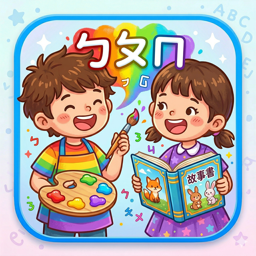
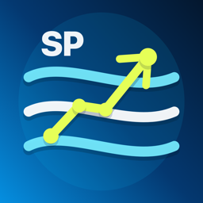

兒童閱讀 / iOS注音故事
用 AI 產生適合孩子閱讀的注音故事，搭配插畫、朗讀與兒童友善排版，讓家裡隨時有新的閱讀材料。
注音閱讀器
故事生成
朗讀輔助
從兒童閱讀、AI 英文練習到 3D 收藏與 visionOS 工具，每個產品都從一個真實使用場景開始。
From children's reading and AI English practice to 3D collections and visionOS tools, every product begins with a real use case.
如果你是第一次來，先從這幾個最有代表性的產品開始。
New here? These apps show the strongest use cases first.

兒童閱讀 / iOS用 AI 產生適合孩子閱讀的注音故事，搭配插畫、朗讀與兒童友善排版，讓家裡隨時有新的閱讀材料。
把實體物件掃描成 3D 模型，整理到 iCloud 收藏庫，再在 Apple Vision Pro 中建立個人展示空間。
從中文想法與英文嘗試開始，取得提示、解析、口說文本、單字故事與閱讀理解練習。
為孩子、家庭與自然教育設計，用照片、插圖、3D 模型與 DioramaMapMaker 產生的沉浸式地景介紹台灣代表性動物。
Generate fresh Zhuyin-supported stories for children, with illustrations, narration support, and a reader tuned for young learners.
Scan real objects into 3D models, organize them in an iCloud library, and turn them into a personal museum on Apple Vision Pro.
Start from a Chinese idea or English attempt, then get hints, explanations, speaking scripts, vocabulary stories, and reading practice.
A friendly nature-learning app that introduces representative Taiwan animals through photos, illustrations, 3D models, and an immersive landscape generated with DioramaMapMaker.
不用先理解完整作品集，從你的角色開始看最相關的產品。
Start from who you are, then jump into the most relevant products.
適合親子閱讀、語言練習、自然探索與輕量遊戲，讓孩子從短時間、可重複的互動開始。
支援課堂紀錄、教材閱讀、英文練習與自然教學，重視隱私、整理效率與可立即使用的內容。
把物件、貼圖、音樂靈感與 3D 場景整理成可保存、可展示、可延伸的創作素材。
探索空間閱讀、3D 展示、沉浸式修行與 visionOS 教材，讓 App 不只停留在平面螢幕。
Reading, language practice, nature discovery, and lightweight play for short, repeatable learning moments.
Classroom notes, reading material, English practice, and nature learning with privacy-minded workflows.
Organize objects, stickers, musical ideas, and 3D scenes into material that can be saved, shown, and extended.
Spatial reading, 3D display, immersive practice, and visionOS learning experiences beyond flat screens.
首頁保留近期重點，完整上架與開發紀錄收在動態檔案。
A short selection here, with the complete launch and development history in the updates archive.
在 Apple Vision Pro 走進寧靜庭院，完成一次包含陰陽儀式、3D 卦象與經文朗讀的沉浸式問卦。
了解守宮易經庭院練習目標、樂譜、節拍器、調音器、錄音與反思，現在集中在同一個音樂練習工作區。
查看 1.4 新功能用 iPhone 把單人演出換上舞台背景、補強前景，再輸出保留原音的分享影片。
了解 MagicStageStep into a quiet Apple Vision Pro courtyard for an immersive reading with a yin-yang ritual, spatial hexagrams, and spoken passages.
Explore Oracle Gecko CourtyardGoals, sheet music, metronome, tuner, recordings, and reflection now live in one music-practice workspace.
See what is new in 1.4Turn a solo iPhone performance into a stage video with a new background, refined foreground, and original sound.
Explore MagicStage依使用情境瀏覽所有已發布與開發中的 App。
Browse every published and in-development app by use case.
以時間對位與 Hashtag 階層鏈為核心的個人財務管理 App，讓使用者用自己的邏輯記帳、清點資產、追蹤負債並探索未來趨勢。
簡單、安靜、拿起來就能用的文字筆記 App，會在日常書寫中於裝置上學習常用名字、詞語與固定說法。
以十二生肖為主題的輕量記憶配對小遊戲。iOS 與 visionOS 版本皆已上架，適合短時間遊玩、親子互動，或用 Apple Vision Pro 在空間中玩一局記憶配對。
以傳統蒙學教育為主題的情境式閱讀 App，從入塾第一日走進蒙館，閱讀《三字經》《百家姓》《千字文》《弟子規》。
以陸羽《茶經》為入口的茶文化學習 App，結合古典文本閱讀、白話解釋、罕見字提示、朗讀、台灣茶產區地圖、製茶流程互動與茶生活故事。
為兒童、家庭與自然教育設計的台灣動物教材 App；visionOS 版已上架，沉浸式台灣地景由 DioramaMapMaker 產生。

iPhone / iPad 已上架給游泳者、家長與教練的進步分析 App，把秒數變化轉成速度、阻力需求與相對功率需求，讓「快一秒」背後的訓練意義更清楚。
給家長使用的家庭教育管理 App，把孩子檔案、每日任務、成長紀錄、家庭備註、獎懲契約與裝置端 AI 教育建議整理在一起。
把單人家庭演出換成舞台風格影片：支援 iPhone 拍攝、照片或檔案匯入、人物與樂器前景修正、背景替換、裁切，以及含原音的 720p / 1080p MP4 輸出。
以 Apple Vision Pro 為核心設計的沉浸式修行空間，支援讀經、迴向、祈願日記、音樂播放與 SharePlay 共修。
走進沉浸式庭院向守宮師父問一件心事，以大衍筮法形成本卦、之卦與變爻，觀看 3D 陰陽儀式、聆聽經文，並在裝置上保存問卦紀錄。
橫跨 Apple 生態系的 3D 收藏與策展工具，串起物件掃描、USDZ 建模、iCloud 收藏庫、hashtag 分類與沉浸式個人博物館。
為 Apple Vision Pro、visionOS、Xcode、Reality Composer Pro 與 Blender 產生空間地形微縮景觀資產的創作工具；iOS、macOS 與 visionOS 版皆已上架，並已用於製作 Taiwan Animals 的 immersive environment。
程序化街景生成工具，可快速建立可重複、可調整、可匯出的立體小鎮場景；iOS 版適合輕量生成與快速查看，macOS 版負責參數調整、package 與 OpenUSD / USDZ 輸出，visionOS 版適合空間預覽。
以基地、面積、樓層、廳房衛、建築風格與 seed 生成可重現的 3D 豪宅方案，支援平面圖與室內動線檢查、方案保存，以及 OpenUSD / USDZ 輸出。iOS、macOS 與 visionOS 版本皆已上架。
自動整理相簿 GPS 足跡，把台灣景點、走透透成就、旅遊回憶與行前清單集中在一張個人觀光地圖。
把照片整理成個人貼圖收藏，並可直接在 iMessage 中傳送。
AI 輔助的兒童閱讀 App，可產生支援注音的故事，已在 App Store 上架。
AI 英文學習 App，從中文想法與英文嘗試開始，逐步取得提示、答案解析與口說文本，並把學過的單字延伸成故事、閱讀理解題與插圖。
快速查詢台北蔬菜價格資訊的工具 App，內含 Google 廣告服務。
隱私安全的 AI 教師管理助手，可用 Apple Intelligence 整理課堂紀錄、出缺勤、聯絡簿草稿與學生報告。
以目標開始、以反思收尾的音樂練習工作區，把樂譜、節拍器、調音器、錄音與進度回顧留在同一個 App。
給音樂學生的課後複習工具，把老師的講解、示範與練習提醒整理成可回放的時間軸筆記，並延伸到相關音樂聆聽。
為音樂創作者設計的樂譜草稿工具，可保留原始錄音，並將演奏或 MIDI 輸入轉成可編輯的五線譜草稿。
A personal finance app built around time alignment and hierarchical hashtag chains, helping people track money, assets, liabilities, and future financial trends in their own logic.
A calm text notebook that learns your frequently used names, words, and fixed phrasing on device as you write, correct, and reuse text.
A light memory matching game themed around the twelve zodiac animals. The iOS and visionOS versions are both live, making it easy to play a quick matching round on iPhone, iPad, or Apple Vision Pro.
A contextual reading app about traditional early education, guiding readers into a private school setting and classic primers such as the Three Character Classic.
A tea culture learning app built around The Classic of Tea, plain-language explanations, rare-character notes, listening support, Taiwan tea regions, tea-making interaction, and tea life stories.
A friendly nature learning app for children, families, and educators. The visionOS version is live, with an immersive Taiwan landscape generated using DioramaMapMaker.
A progress analysis app for swimmers, parents, and coaches, turning race-time changes into velocity, drag-demand, and relative power-demand insights.
A family education management app for parents, bringing child profiles, daily tasks, growth records, family notes, reward contracts, and on-device education suggestions together.
Turn a single-person home performance into a stage-style video with iPhone recording, Photos or Files import, performer and instrument foreground correction, background replacement, trimming, and audio-preserving 720p / 1080p MP4 export.
An immersive Buddhist practice space for Apple Vision Pro, with sutra reading, dedication, wish journaling, music playback, and SharePlay practice.
Enter an immersive courtyard to ask the gecko master one question, form original and transformed hexagrams through the yarrow-stalk method, watch a spatial yin-yang ritual, hear the selected passages, and keep reading history on device.
A 3D collection and curation tool for the Apple ecosystem, connecting object scanning, USDZ modeling, iCloud libraries, hashtag organization, and immersive personal museums.
A creative tool for generating spatial terrain dioramas for Apple Vision Pro, visionOS apps, Xcode projects, Reality Composer Pro, Blender, and 3D workflows. The iOS, macOS, and visionOS versions are live, and DioramaMapMaker was used to build the Taiwan Animals immersive environment.
A procedural street-scene generator for repeatable, adjustable, exportable 3D town dioramas. The iOS version supports lightweight generation and quick review, the macOS version handles parameter tuning, packages, and OpenUSD / USDZ export, and the visionOS version focuses on spatial preview.
A repeatable 3D mansion concept generator driven by site, area, floors, room program, architectural style, and seed, with plan and interior-route inspection, saved designs, and OpenUSD / USDZ export. The iOS, macOS, and visionOS versions are now available.
A personal Taiwan travel map that turns photo GPS history into visited spots, completion stats, travel memories, and planning lists.
Turn your photos into an organized personal sticker collection and send them directly in iMessage.
An AI-powered reading app that generates Zhuyin-supported stories for children, now available on the App Store.
An AI English learning app that turns Chinese ideas and English attempts into guided hints, answer explanations, speaking practice, vocabulary-based stories, comprehension questions, and illustrations.
A quick reference app for Taipei vegetable price information. Contains Google advertising services.
A privacy-minded AI classroom assistant for teachers, using Apple Intelligence for notes, attendance, contact-book drafts, and student reports.
A goal-led music practice workspace that keeps sheet music, a metronome, tuner, recordings, reflection, and progress review in one app.
A practice companion for music students, turning teacher guidance, demonstrations, and practice reminders into replayable timeline notes with related listening paths.
A score draft tool for music creators, preserving original recordings and turning performances or MIDI input into editable staff notation drafts.